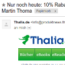

Why I prefer Linux over Windows |
Recent Posts all posts
Shortfilms, Part III |
How to use Jekyll with GitHub |

|
DNS-Services |
Google Reader Alternatives |
Myth: The Internet doesn''t forget |
Disable Wikipedia fundraising banner |
|  |
When advertising becomes spam |

|
Creating Gantt Charts |

|
TOP 5: Worst Website Designs |